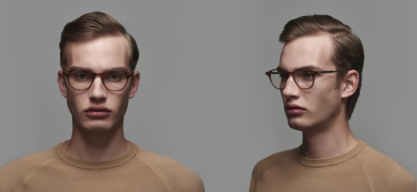
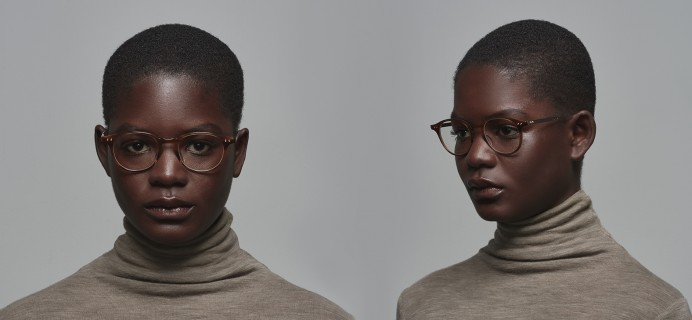

Ash, Buckeye and Birch are the embodiment of Jeff’s dream to create an ultra-lite series of classic men’s optical frames in a variety of shapes and sizes that will flatter any face. Featuring custom Japanese acetate in a classic, semi-round shape with an elegant keyhole bridge, ultra-comfortable beta titanium temples with a pressed diamond pattern, and recessed custom hinges and functionally beautiful hex screws/nuts, Ash is a classic yet contemporary style with a genuine DITA soul.